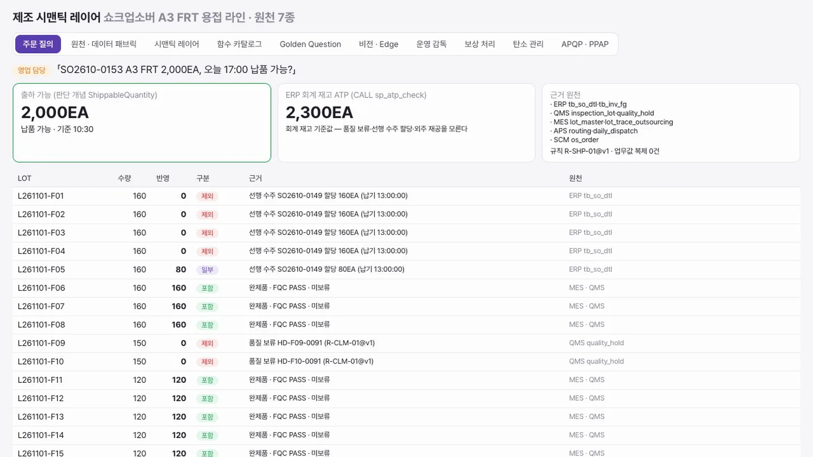
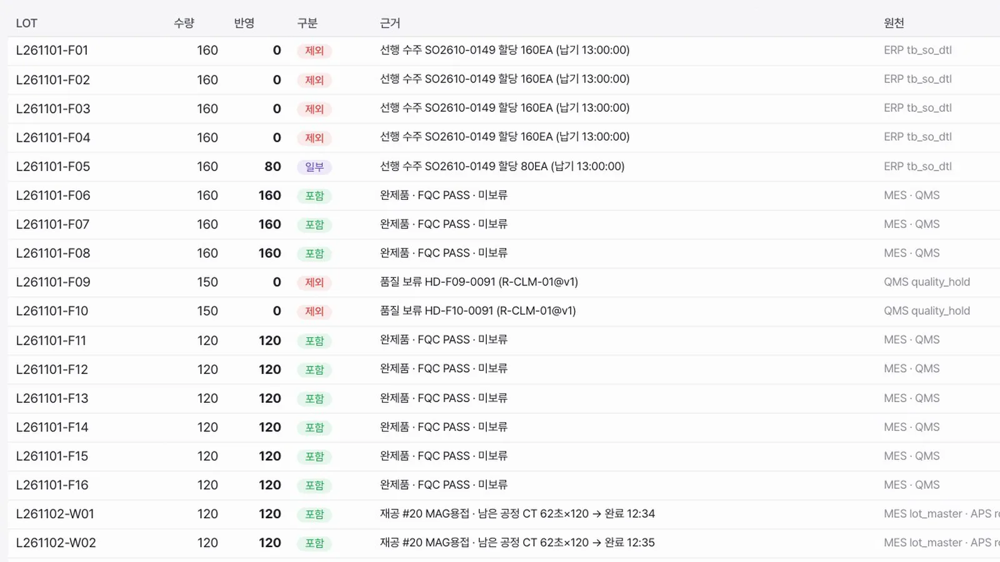
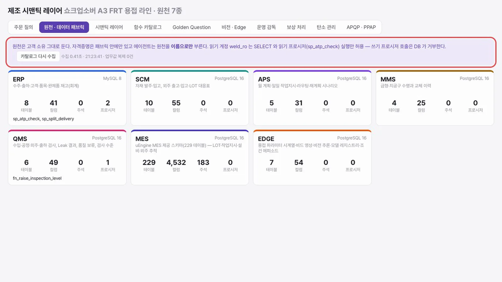
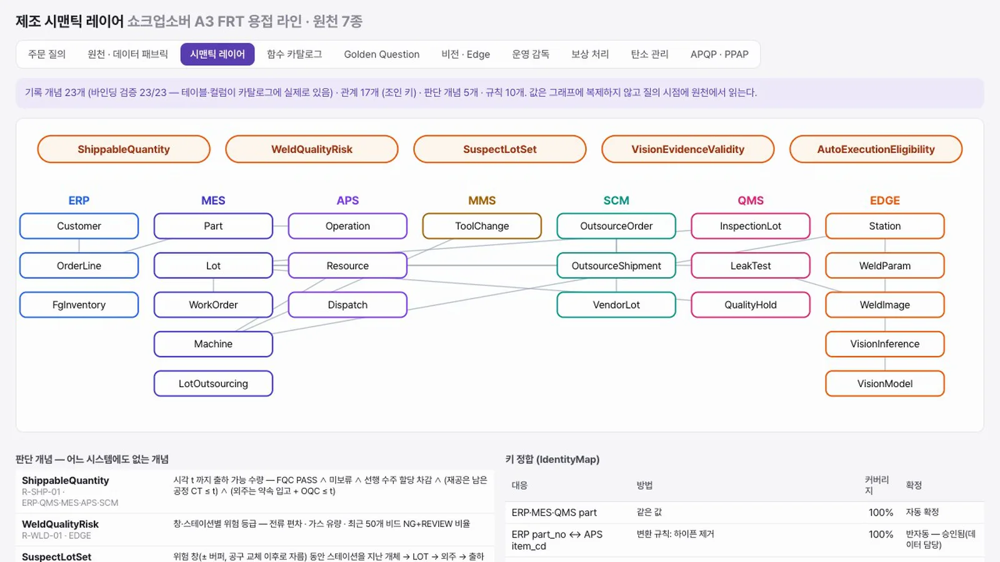
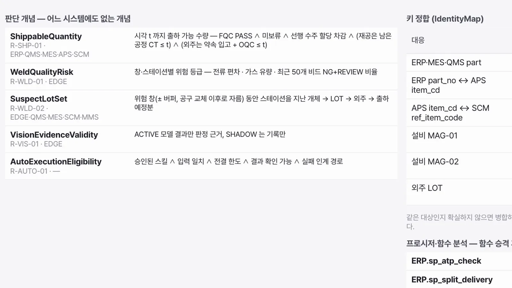
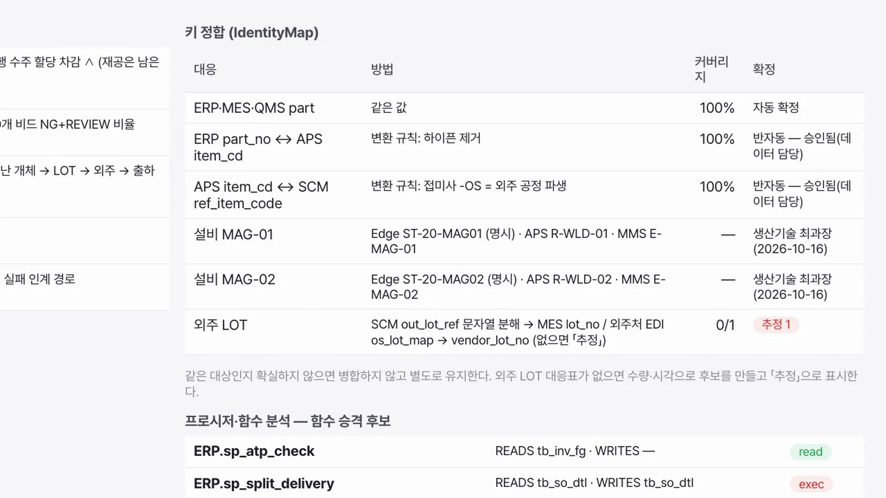
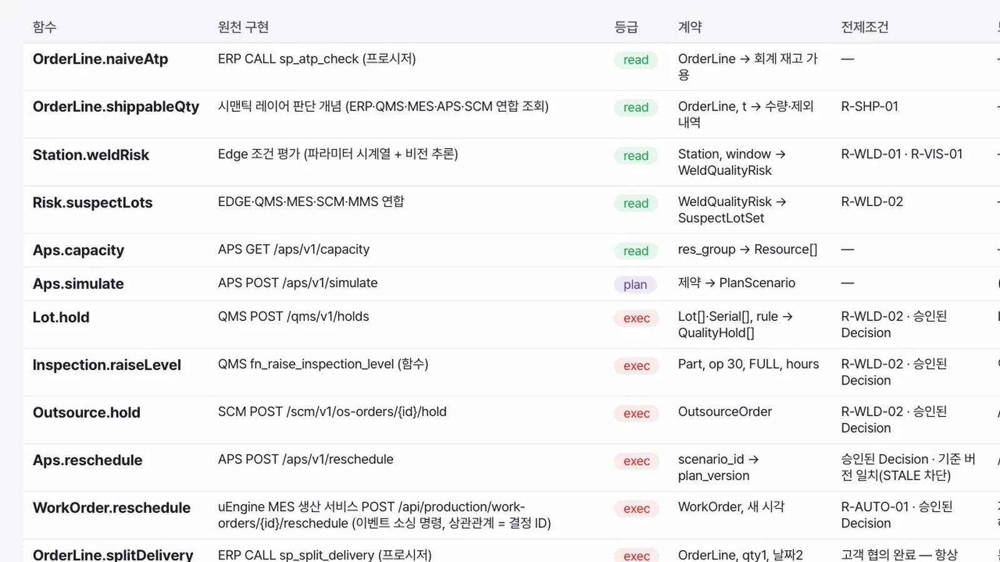
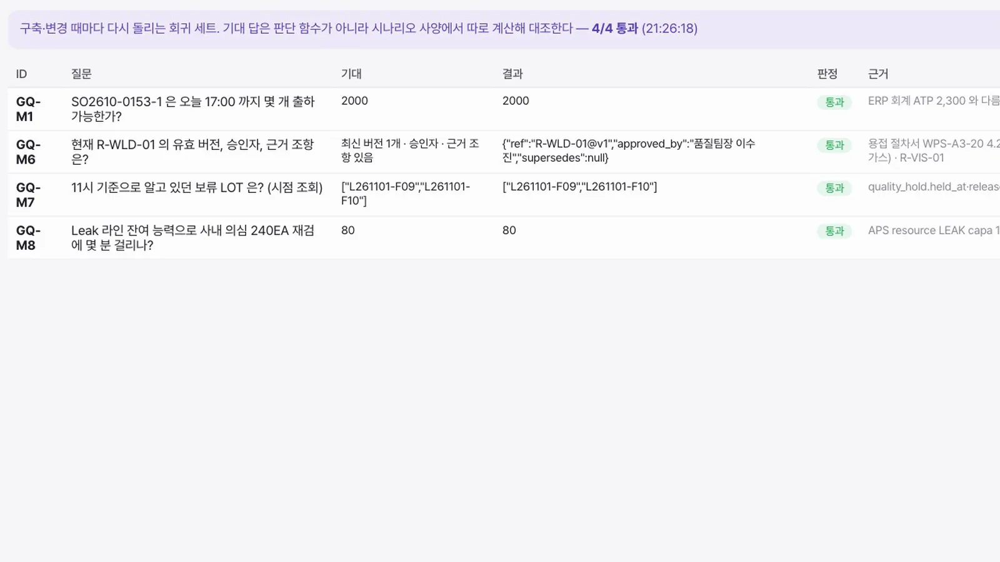

「오늘 17시까지 2,000개 납품할 수 있나?」 한 문장에 답하려면 시스템 몇 개를 어떻게 읽어야 할까요. ERP 회계 재고와 다른 답이 왜 나오는지 LOT 별 근거로 따라가고, 그 답을 만드는 원천, 온톨로지, 함수, 회귀 세트를 둘러봅니다.
무엇을 · 왜#
공장의 사실은 여러 시스템에 나뉘어 있습니다. ERP 는 회계 재고를, QMS 는 품질 보류를, MES 는 LOT 위치를, APS 는 공정 시간을, SCM 은 외주를 압니다. 어느 한 시스템도 「지금 출하할 수 있는 수량」을 모릅니다.
시맨틱 레이어는 데이터를 옮기지 않고 원천의 표와 컬럼에 같은 의미를 입힙니다. 그 위에 어느 시스템에도 없는 판단 개념을 규칙과 함께 정의하고, 질의할 때 원천에서 읽어 계산합니다. 답에는 항상 근거가 붙습니다.
이 장의 화면은 쇼크업소버 A3 FRT 용접 라인을 가정한 합성 시나리오입니다.
이 화면의 상태
영상과 그림은 용접 이상이 생기기 전의 상태입니다. 출하 가능은 2,000EA, 납품 가능입니다. 이상 대응을 실행한 뒤에는 의심 LOT 보류가 반영되어 같은 질문의 답이 1,640EA, 360EA 부족으로 바뀝니다. 시연 환경의 상태에 따라 어느 쪽이든 볼 수 있습니다. 대응이 실행되는 과정은 에이전트 협업 장에서 봅니다.
따라 하기#
- 콘솔 열기. 시연 환경을 받을 때 함께 안내받은 콘솔 주소로 들어가면 제조 시맨틱 레이어 콘솔의 주문 질의 탭이 열립니다. 영업 담당의 질문은 「SO2610-0153 A3 FRT 2,000EA, 오늘 17:00 납품 가능?」입니다.

주문 질의 - 두 답 비교. 왼쪽 카드의 출하 가능은 판단 개념
ShippableQuantity의 답으로 2,000EA, 납품 가능입니다. 가운데 카드의 ERP 회계 재고 ATP 는 프로시저sp_atp_check의 답으로 2,300EA 입니다. 회계 재고 기준이라 품질 보류, 선행 수주 할당, 외주 재공을 모릅니다. 오른쪽 카드에는 근거 원천과 규칙R-SHP-01@v1, 업무값 복제 0건이 있습니다.
출하 가능과 ERP 회계 재고 - LOT 별 근거 읽기. 아래 표가 답의 내역입니다. LOT 마다 수량, 반영 수량, 구분(포함·일부·제외), 근거, 원천이 있습니다. F01~F05 는 선행 수주 SO2610-0149 할당으로, F09·F10 은 품질 보류로 빠집니다. 재공 LOT 은 남은 공정 시간으로 완료 시각을 계산해 17:00 안이면 넣습니다. 외주 LOT W03 은 약속 입고 15:00 에 검사 시간을 더해 15:30 으로 계산합니다.

LOT 별 근거 - 원천 보기. 원천 · 데이터 패브릭 탭을 엽니다. ERP(MySQL), SCM, APS, MMS, QMS, MES, EDGE(PostgreSQL) 7종의 테이블, 컬럼, 주석, 프로시저 수가 있습니다. 위쪽 안내대로 데이터는 원천에 그대로 두고, 읽기 계정은 쓰기 프로시저를 호출할 수 없습니다. 카탈로그 다시 수집은 누르지 않아도 됩니다.

원천 7종 - 온톨로지 보기. 시맨틱 레이어 탭을 엽니다. 원천별 기록 개념 23개가 놓여 있고, 바인딩 검증 23/23 은 그 표와 컬럼이 카탈로그에 실제로 있다는 뜻입니다. 선은 조인 키로 연결된 관계 17개, 위쪽 주황색은 판단 개념 5개입니다.

기록 개념과 판단 개념 - 판단 개념 읽기. 아래로 내려 판단 개념 표를 봅니다. 개념마다 규칙, 쓰는 원천, 정의가 있습니다.
ShippableQuantity는 「시각 t 까지 FQC PASS ∧ 미보류 ∧ 선행 수주 할당 차감 ∧ 재공은 남은 공정 CT ≤ t ∧ 외주는 약속 입고 + OQC ≤ t」입니다.
판단 개념 - 키 정합 읽기. 오른쪽 키 정합 (IdentityMap) 은 시스템마다 다른 품번과 설비 코드를 잇습니다. 방법, 커버리지, 확정 주체가 함께 있습니다. 확실하지 않으면 병합하지 않습니다. 외주 LOT 은 대응표가 없어 추정으로 표시됩니다.

키 정합 - 함수 카탈로그. 함수 카탈로그 탭을 엽니다. 이미 있는 프로시저와 서비스를 read, plan, exec 등급의 함수로 올린 목록입니다. exec 함수는 승인된 결정 없이 호출할 수 없고, 보상 짝과 결과 확인 방법이 있습니다.

함수 카탈로그 - Golden Question. Golden Question 탭을 엽니다. 구축하거나 바꿀 때마다 다시 돌리는 회귀 세트입니다. 기대 답은 판단 함수가 아니라 시나리오 사양에서 따로 계산해 대조합니다. 녹화 때는 사건이 들어오기 전이라 네 문항이 돌았고 4/4 통과였습니다. 사건이 실행된 뒤에는 8/8 이 됩니다.

Golden Question
시연의 범위
- 이 콘솔이 쓰는 데이터 패브릭과 온톨로지는 시연을 위한 경량 구현입니다.
- 원천 데이터, 시나리오 시각(기준 10:30), 사람 이름은 모두 합성입니다.
- 콘솔의 비전 추론은 픽셀 규칙으로 흉내 낸 추론기이며 학습된 모델이 아닙니다.
확인 문제#
- ERP 회계 재고와 출하 가능 수량이 다른 이유를 두 가지 드세요.
- 「바인딩 검증 23/23」은 무엇을 확인한 것인가요?
- 외주 LOT 대응표가 없으면 어떻게 표시하나요?
- exec 함수를 호출하려면 무엇이 있어야 하나요?
정답
- ERP 회계 재고는 품질 보류, 선행 수주 할당, 외주 재공을 모릅니다. 이 중 두 가지면 됩니다.
- 온톨로지의 기록 개념 23개가 가리키는 테이블과 컬럼이 원천 카탈로그에 실제로 있는지입니다.
- 수량과 시각으로 후보를 만들고 추정으로 표시합니다. 같은 대상인지 확실하지 않으면 병합하지 않습니다.
- 승인된 결정(Decision ID)입니다.